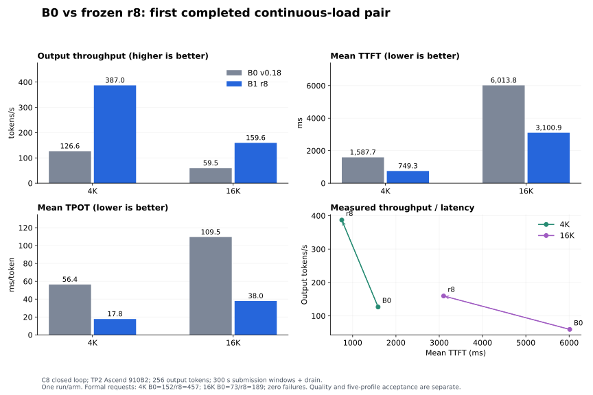

Inherited serving stack
CorrectedWorker, BetterScale, Microflow, KV materialization, MTP2 and FULL graphs. Request-scoped KV recomputation and packed host allocation remain enabled.
Ascend serving stack
负责人：张书豪
Frozen r8 is available for reproduction, MOD development and further optimization.
Fixed starting point: r8 · E36/R54 · async H2D · Tail256
Run one command in your target CPython 3.12 / Linux aarch64 virtual environment with CANN 9.1.0. The fixed SHA256-checked manifest installs all four engine packages and replaces vllm and vllm-ascend.
python -m pip install --no-deps -r https://vllm-hust.sage.org.ai/wheels/r8.txtKeeps import vllm, import vllm_ascend and the vllm command. Use the frozen r8 runner below to enable the Qwen35 MOD combination.
Qualified dependencies: Torch 2.13.0+cpu, Torch-NPU 2.13.0rc1, Triton-Ascend 3.6.0, Transformers 5.14.1 and tokenizers 0.22.2. These vendor dependencies must already be prepared; --no-deps preserves them. Qualified model/hardware: Qwen3.5-35B-A3B BF16, two Ascend 910B2 cards, TP2.
The manifest explicitly pins Engine 2026.11.17.8.post2 and all three runtime wheels. --no-deps avoids re-resolving conflicting upstream NumPy requirements; it does not install Torch, Triton-Ascend or CANN. pip checks all four artifact hashes. No separate installer, private source access or native recompilation is needed. The frozen r8 runtime and MODs are unchanged. Installation does not start a model.
Pinned installation manifest ↗ · PyPI
python -m pip uninstall vllm vllm-ascend vllm-hust-runtimeDownload the runner and supply the fixed B1 Python and device IDs. Package new optimizations as MODs and retain the frozen r8 control and raw results.
python3 download-and-run-r8-full-v3.py \
--b1-python /absolute/path/to/fixed-b1-sdk/bin/python \
--physical-devices 0,1 --out ./runs/r8-full-fiveThe default runs all five fixed profiles; add --datasets mmlu for a quick run. Logs follow automatically.
Throughput 3.06× / 2.68×; mean TTFT −52.8% / −48.4%, TPOT −68.5% / −65.4%. Zero failed requests.

Both arms use the same input recipe and 71 unscored warmups, TP2, concurrency8 and 256 output tokens. Each formal phase submits for300s, then drains; throughput includes the drain. TPOT=(end−first token)/(output tokens−1). Both ranks seal Torch Dynamo and Triton before measurement. These stress measurements are separate from dataset quality and compute-reference efficiency.
Original streams and portable CPU replay ↗ · Statistics and tail latency ↗ · Current release manifest ↗
Each r8 badge marks inclusion in the frozen release; it is not an independent speedup claim.
CorrectedWorker, BetterScale, Microflow, KV materialization, MTP2 and FULL graphs. Request-scoped KV recomputation and packed host allocation remain enabled.
Guarded asynchronous H2D progress copy; E36/R54; priority for existing eligible 1–256-token prefill tails.
Host State 4 GiB/rank, device KV 20 GiB/rank, prefill budget 4096 tokens. The 10 runtime overlay files match the current C15 candidate byte for byte.
2026-11-17 · Frozen release
One file restores the pinned tools and runtime sources, runs inference and scoring, generates plots, and follows live logs. Private GitHub credentials are read from .env or environment variables.
Quick: MMLU200. Full: the five fixed profiles. Both use the original answer budgets and scoring.
r6 → r8 development pairs ↗ · B0/r6 full report ↗ · r7 ↗ · r5 ↗ · r4 ↗ · r1–r3 ↗ · Reports by date ↗ · SR experiment details ↗